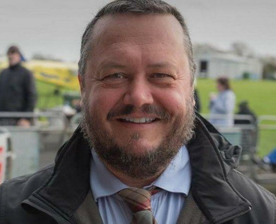
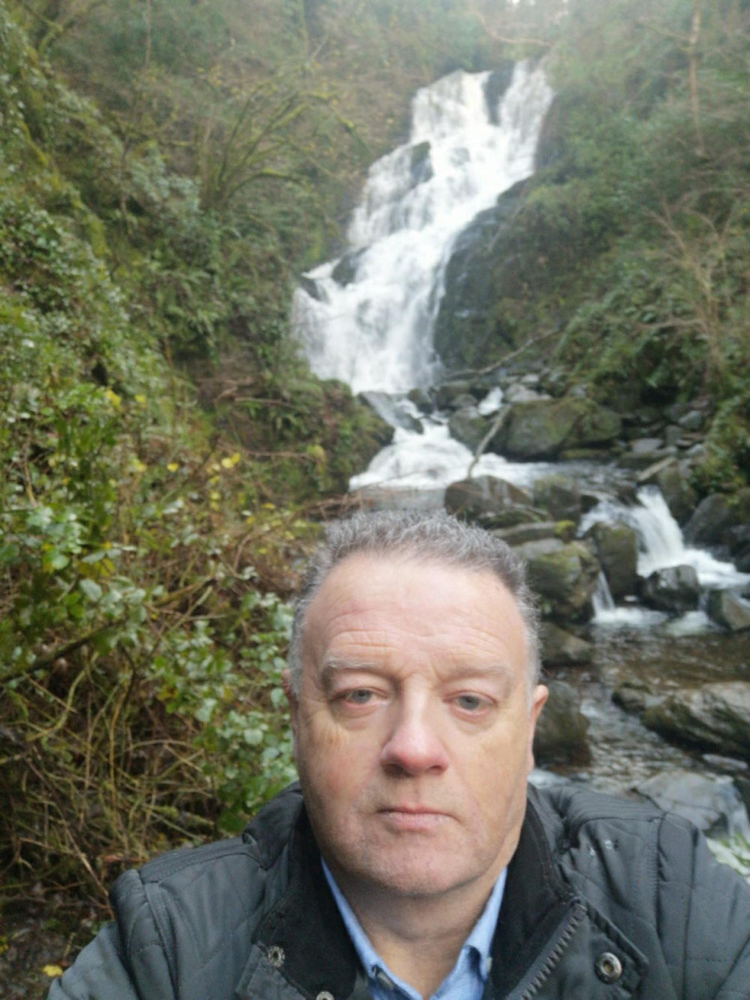
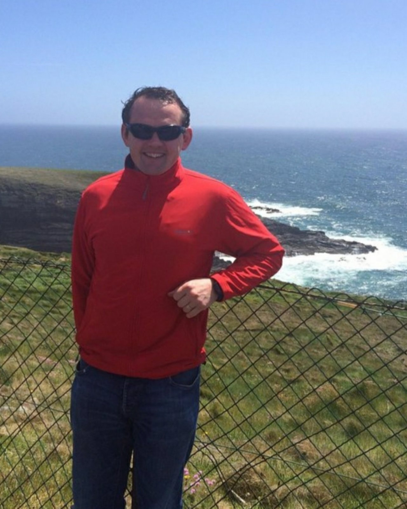

Йорген Хартогс
Йорген Хартогс - гід-екскурсовод, що спеціалізується переважно на пішохідних екскурсіях у м. Лімерік та Адер. При цьому, у випадку необхідності він може провести і тривалий тур на авто по містах Ірландії. Йорген володіє англійською, німецькою та голландською мовами. Детальніше

Джимі Малруні
Джимі Малруні - гід, що спеціалізується на індивідуальних турах по нетривіальних місцях. Він самостійно розробляє мандрівки у точки Ірландії, де ще мало хто бував. Основний акцент робиться на природних об'єктах. Джимі володіє англійською мовою. Детальніше

Роган Хіден
Роган Хіден - гід-екскурсовод, який покаже вам Ірландію у ході міських пішохідних екскурсій. Він фахівець у галузі історії країни. До того ж Роган може допомогти знайти хороші заклади розміщення та харчування. Гід володіє англійською мовою. Детальніше

Майкл Фокс
Майкл Фокс - гід-екскурсовод, що спеціалізується на більш тривалих мандрівниках у різні куточки Ірландії. Майкл може як проводити екскурсії у містах, так і організовуватися виїзди до природних об'єктів. Гід володіє англійською мовою. Детальніше